Contents
Revision 3 (2026-08-07). Two setup systematics were found and fixed since revision 1; both are described in section 2 and both changed published numbers. (a) Fold-grid commensurability. The real-space fold of $\Delta V$ onto the primitive grid is valid only when the cube grid is an integer multiple of the primitive FFT grid. The V$_S$ and Sdisp 6$\times$6 arms had been run on a primitive save with grid 27$\times$27$\times$216 against 240$\times$240$\times$300 cubes (ratios 8.89/8.89/1.39) — every number from those arms was wrong and has been recomputed on a commensurate twin. O$_S$/Se$_S$, the $\chi$ arm and all 12$\times$12 work were already commensurate and are unchanged. (b) Potential reference. $\Delta V$ is vacuum-aligned while the truth gate was core-level anchored; the mismatch is a rigid per-defect constant of 20–50 meV, now measured and predicted parameter-free. Consequences: the earlier claims that V$_S$ carried a structural error (a 29 meV splitting of a degenerate doublet, a missing state) and that its ladder under-converged a collective mode are retracted — both were the grid artifact. The Sdisp headline "+8.2/+8.5 vs +6.5 meV" was a broken-grid coincidence. Also retracted earlier: the bare-150 rows were once $N_k$-inflated, and the claim that the O$_S$ ghost survives correct static dressing.
1. What is compared
Every method diagonalizes the same active-space effective Hamiltonian
on the 6$\times$6 grid, whose $H_{\rm eff}$ is the supercell-array problem, so its levels compare one-to-one with the defect supercell at $\Gamma$ (the truth gate). Methods differ only in the rest self-energy $\Sigma$ — see the method derivations. Active space = the 11-band $d+p$ manifold (396 states); $R_1$ = the other 139 NSCF bands; $\omega_0$ at the VBM.
| method | $\Sigma$ |
|---|---|
| M-only | none |
| bare-150 | one bounce through the explicit rest bands, 2nd order |
| MODE A | $R_1$ dressed to all orders; model tail only |
| MODE B | $R_1$ exact + physical tail via the deflated ladder, frozen $\omega_0$ |
| MODE C | full rest, exact, $\omega$-resolved (block-Lanczos continued fraction) |
2. Two setup systematics that govern every number
(a) The fold grid must match the supercell multiplicity. build_V_folded maps the supercell cube onto the primitive grid by real-space modulo indexing, so it is exact only if $n^{\rm cube}_i = N^{\rm sc}_i\,n^{\rm prim}_i$ — the ratio must be the multiplicity, not merely an integer. Three primitive grids against the same 240$\times$240$\times$300 cubes of a 6$\times$6 supercell:
| primitive grid | cube/grid | M-only gap window (eV) | verdict |
|---|---|---|---|
| 27$\times$27$\times$216 | 8.89 / 8.89 / 1.39 | +0.0370 +0.0442 +0.0570 +1.6859 +1.6962 | doublets split 7–13 meV |
| 30$\times$30$\times$300 | 8 / 8 / 1 (integral, $\ne N^{\rm sc}$) | 15 states where there should be 5 | degeneracies destroyed |
| 40$\times$40$\times$300 | 6 / 6 / 1 | +0.0395 +0.0395 +0.0858 +1.6593 +1.6593 | exact (0.0 meV) |
The incommensurate fold aliases $\Delta V$, breaks C$_3$ (degenerate doublets split by 6–29 meV) and changes $\lVert\tilde V\rVert$ by 45%. Degeneracy splitting is therefore the cheap fingerprint: on the commensurate grids the C$_3$ pairs are degenerate to 0–4 $\mu$eV. The cube itself is C$_3$-exact (rms $3\times10^{-7}$ Ry under an exact integer rotation), so geometry is not involved. EDT now prints FOLD grids: ... supercell = 6 6 1 on the first call and aborts when the multiplicity condition fails. A 6$\times$6 cube of 240$\times$240$\times$300 needs exactly nr1=nr2=40, nr3=300 — the ecut-50 auto grid (27$\times$27$\times$216) and any other divisor are unusable.
(b) The potential reference. A constant $c$ in $\Delta V$ shifts every level by exactly $c$. The code builds $\Delta V=(V_d-\mathrm{vac}_d)-(V_p-\mathrm{vac}_p)$ — vacuum-aligned — while the gate anchors the truth on the mean of 80 Mo semicore levels, which is additionally biased by the defect's own neighbours (O$_S$ outliers lie $+237/+176/+161$ meV from the median). The resulting offset is predicted with no fitting from two independently measured quantities:
| defect | $-\Delta\mathrm{vac}$ | $-$shift$_{\rm deep}$ | predicted | observed | diff |
|---|---|---|---|---|---|
| V$_S$ | $+14.7$ | $+3.2$ | $+17.9$ | $+25.5$ | $+7.6$ |
| O$_S$ | $-12.5$ | $-34.0$ | $-46.6$ | $-49.3$ | $-2.7$ |
| Se$_S$ | $+17.0$ | $+15.5$ | $+32.4$ | $+26.9$ | $-5.5$ |
(meV; the far-field in-slab plateau of $\Delta V$ is $+16.2/-21.9/+28.6$ meV with a vacuum plateau $\le 1.4$ meV.) Numbers below are quoted in the deep-band-anchored frame (conservative); the vacuum-aligned frame is the like-for-like one and removes the per-defect constant.
3. S-displacement probe
One S displaced $+0.30$ Å along $z$; levels relative to the CBM (meV).
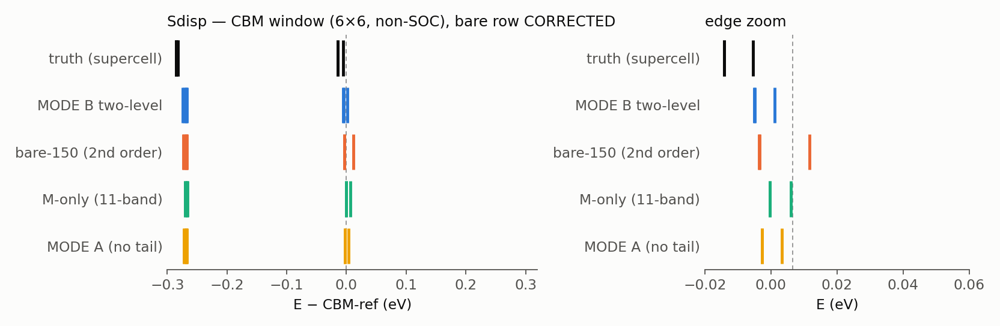
| method | CBM doublet | rest of the window |
|---|---|---|
| truth | $+6.5$ (2$\times$) | $+214.8$ (2$\times$), $+230.6$, $+280.9$, $+283.1$ (2$\times$) |
| M-only | $+33.8$ (2$\times$) | resonances $+276$ and up |
| bare-150 | $+22.7$ (2$\times$) | $+263.5$ (2$\times$), $+290.2$ |
| MODE A | $+26.0$ (2$\times$) | $+263.0$ (2$\times$) |
| MODE B | $+24.3$ (2$\times$) | $+234.8$ (2$\times$), $+252.3$, $+292.1$, $+294.4$ (2$\times$) |
MODE B reproduces all 8 features with exact degeneracies; the deviation is a rigid $+16.4$ meV with 4.2 meV scatter.
4. Relaxed V$_S$
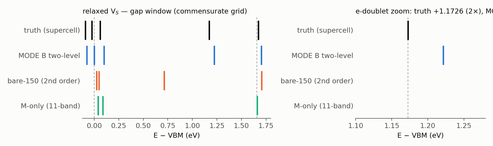
| method | gap window (eV rel. VBM) |
|---|---|
| truth | $-0.0900$, $-0.0248$ (2$\times$), $+0.0596$, $+1.1726$ (2$\times$), $+1.6716$ (2$\times$) |
| M-only | $+0.0395$ (2$\times$), $+0.0858$, $+1.6593$ (2$\times$) — doublet missing |
| bare-150 | $+0.0244$ (2$\times$), $+0.0471$, $+0.7112$ (2$\times$), $+1.7054$ (2$\times$) — spurious pair |
| MODE B | $-0.0754$, $-0.0010$ (2$\times$), $+0.0989$, $+1.2214$ (2$\times$), $+1.7040$ (2$\times$) |
| MODE C | $-0.0653$, $-0.0010$, $+0.0840$, $+1.1985$, $+1.7003$ |
All 8 truth features are present with the correct degeneracy pattern. MODE C vs truth: a rigid $+25.5$ meV with RMS 1.7 meV (vacuum-aligned: $+7.6\pm1.7$).
5. Head-to-head with $\chi$ augmentation
The pre-Sternheimer production recipe (explicit $\le$150 bands + multi-center $\chi$ — the set that produced the historical $+217\to+41$ meV SOC ladder) on identical inputs:
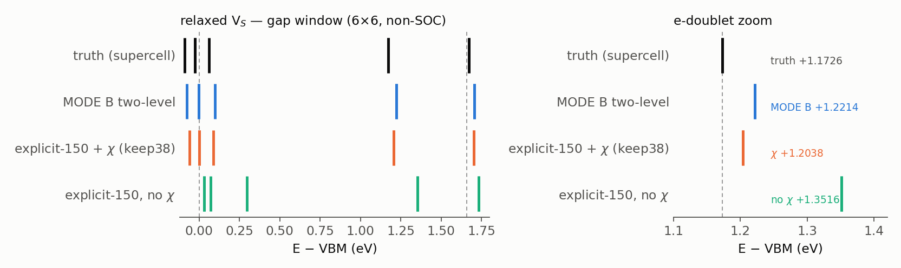
| method | $e$-doublet | error | basis engineering |
|---|---|---|---|
| truth | $+1.1726$ (2$\times$) | — | — |
| explicit-150, no $\chi$ | $+1.3516$ (2$\times$) | $+179$ | none |
| + $\chi$, keep=30 / 38 | $+1.2077$ / $+1.2038$ | $+35$ / $+31$ | 10-center set + rank scan |
| MODE B | $+1.2214$ (2$\times$) | $+49$ | none |
| MODE C | $+1.1985$ | $+26$ | none |
Same accuracy class, with the $\omega$-resolved route needing no defect-specific orbitals and no tuned rank. (Subtract the $+18$ meV V$_S$ reference constant from every row for the like-for-like frame.)
6. O$_S$ and Se$_S$
Se$_S$ is benign under every treatment. O$_S$ is the instructive case: the famous O-2p push-up "ghost" at $+0.80$ eV appears in M-only, is already relocated by a correctly computed bare-150 ($+0.025$ (2$\times$) / $+0.035$, gap clean), and is kept by MODE B ($+0.807$) because its 6-rung ladder under-converges a genuine slow rest mode — the one case where MODE B and MODE C disagree on a commensurate grid ($\lVert\Delta\Sigma\rVert = 0.68$ Ry, versus $2\times10^{-4}$ for V$_S$ and $8\times10^{-5}$ for Se$_S$).
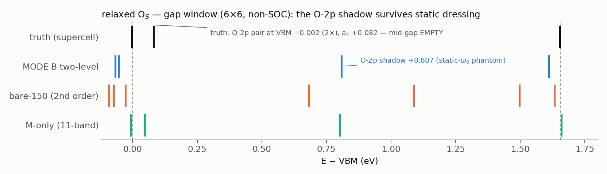
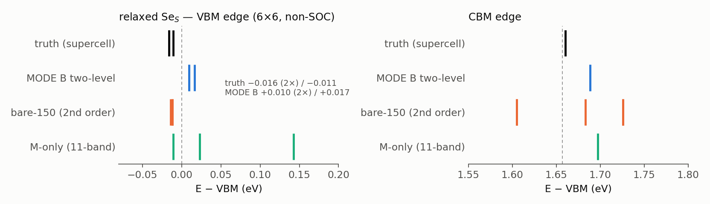
| O$_S$ | O-2p pair | a$_1$ | mid-gap | CBM edge |
|---|---|---|---|---|
| truth | $-0.002$ (2$\times$) | $+0.082$ | empty | $+1.653$ (2$\times$) |
| M-only | $-0.006$ (2$\times$) | $+0.048$ | $+0.801$ (2$\times$) | $+1.659$ (2$\times$) |
| bare-150 | $+0.025$ (2$\times$) | $+0.035$ | empty | $+1.654$ (2$\times$) |
| MODE B | $-0.054$ (2$\times$) | — | $+0.807$ (artifact) | $+1.609$ (2$\times$) |
| MODE C | $-0.055$ (2$\times$) | $+0.038$ | empty | $+1.602$ (2$\times$) |
Se$_S$ (VBM edge / CBM edge): truth $-0.016$ (2$\times$) / $-0.011$ and $+1.660$ (2$\times$); MODE C $+0.010$ (2$\times$) / $+0.017$ and $+1.688$ (2$\times$) — a uniform offset with sub-meV internal spacings.
7. $\omega$-resolved rest (MODE C)
A global block Lanczos on the full dressed rest operator $P_RHP_R$ (block = all 396 sources; folds cached once; KB coefficients as owner-pool ZGEMMs; CGS $\times$2 re-orthogonalization as one strided ZGEMM; h_psi batched 396-wide). One chain serves every $\omega$ and $\eta$ through the block continued fraction (see the derivations). Certification: an in-code operator unit test (apply the Lanczos $H$ to known band states, compare with the edmat columns) passes at $3$–$8\times10^{-15}$ Ry on all three defects; chains converge by 18–24 block steps (bit-identical gates at 24/36/48); $A_j$ hermiticity $\sim10^{-15}$; $\approx$50 s per block step, 40 min per chain per node.
All three defects, quasiparticle levels vs supercell truth:
| defect | deep-anchor mean | vacuum-aligned mean | RMS about the mean | features |
|---|---|---|---|---|
| V$_S$ | $+25.5$ | $+7.6$ | 1.7 meV | 5/5 |
| O$_S$ | $-49.3$ | $-2.7$ | 3.8 meV | 3/3 |
| Se$_S$ | $+26.9$ | $-5.5$ | 0.7 meV | 3/3 |
Under one reference and with no fitting, the downfolded spectra sit on the supercell spectra to $\le 8$ meV absolute and 1–4 meV in shape across a 1.65 eV window:
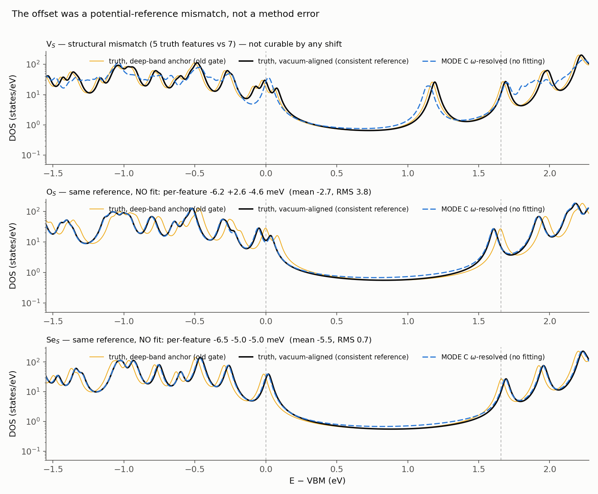
The same chains give the downfolded DOS directly, $-\tfrac{1}{\pi}\mathrm{Im\,Tr}[\omega+i\eta-H_{\rm eff}(\omega+i\eta)]^{-1}$, peak-by-peak against the truth ($\eta$ = 25 meV):
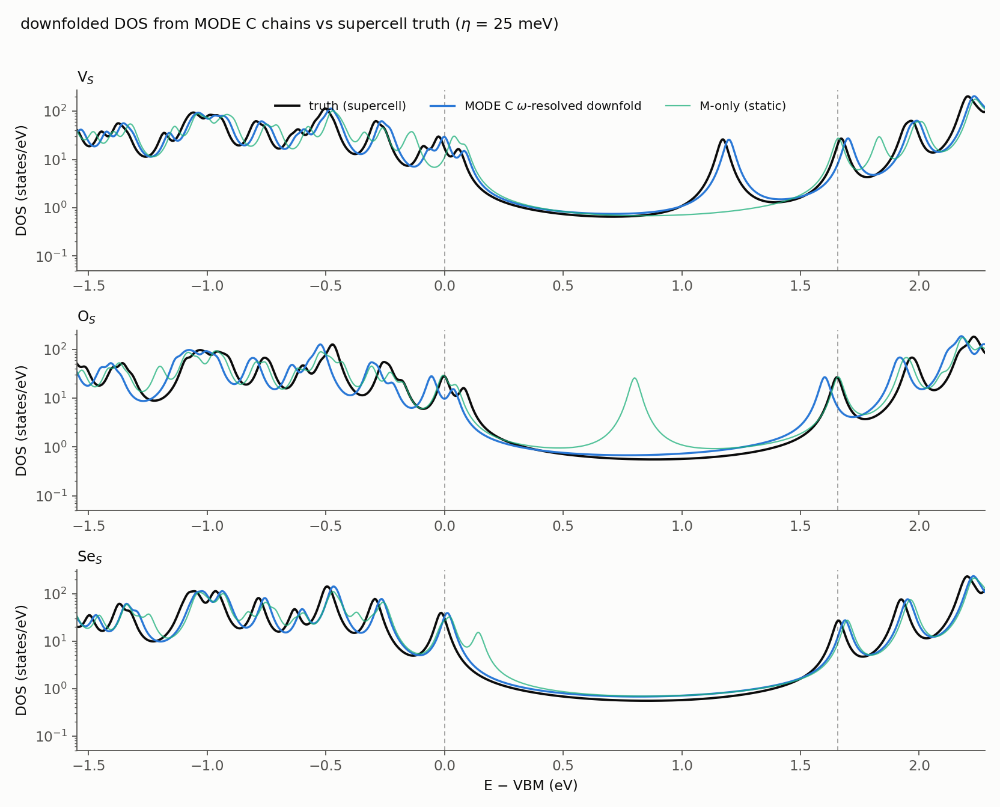
How much does $\omega$-resolution actually buy?
The same chains answer this directly: evaluate the continued fraction at the single anchor $\omega_0$, freeze it, and diagonalize. That exact static $\Sigma(\omega_0)$ is not MODE B — it has no ladder truncation — so the comparison isolates the frozen-frequency approximation alone.
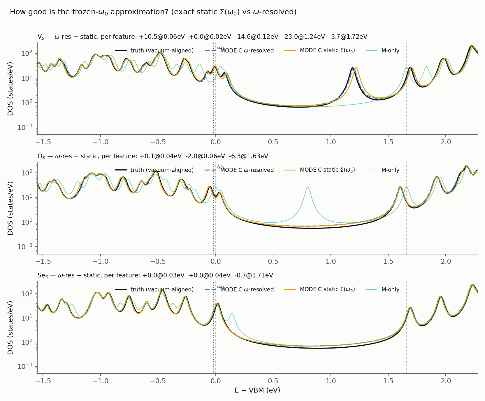
| defect | static $\Sigma(\omega_0)$ | $\omega$-resolved | worst per-feature shift |
|---|---|---|---|
| V$_S$ | $+13.7 \pm 12.0$ | $+7.6 \pm 1.7$ | $-23$ meV (the $+1.20$ eV gap doublet) |
| O$_S$ | $-0.0 \pm 4.6$ | $-2.7 \pm 3.8$ | $-6$ meV (CBM edge) |
| Se$_S$ | $-5.3 \pm 0.9$ | $-5.5 \pm 0.7$ | $-0.7$ meV |
(mean $\pm$ RMS in meV vs the vacuum-aligned truth.) Readings: (i) the frozen-$\omega_0$ approximation is already good — the qualitative physics, including the O$_S$ ghost removal, is present in the exact static $\Sigma$, so the ghost was never a frozen-frequency failure but a ladder-convergence one; (ii) $\omega$-resolution is a quantitative correction that matters for deep states far from the anchor with strong rest character — for V$_S$ it cuts the shape error from 12.0 to 1.7 meV, moving the in-gap doublet by 23 meV onto the truth peak (visible in the top panel); (iii) the size of the correction tracks the state's rest weight $\times\,\partial\Sigma/\partial\omega$, not merely $|\omega-\omega_0|$: V$_S$'s CBM-edge feature sits 1.7 eV from the anchor yet moves only 3.7 meV, while its gap doublet at 1.2 eV moves 23 meV. Practical rule: use the single-point evaluation for edge states and for screening, the full scan when deep gap levels are the deliverable — both come from one chain, so the cost difference is only in the post-processing.
For V$_S$ the two answers and the truth are compared level-by-level in a separate figure.
{kind=link}
8. $12\times12$ by coset decomposition — a second, independent gate
Everything above lives at one supercell $k$-point ($\Gamma$), because a $6\times6$ $k$-grid on a $6\times6$ cube folds there. To get a second one we do not need a finer grid — we need the same defect concentration sampled elsewhere in the supercell BZ. Splitting a $12\times12$ grid into its four cosets of the supercell reciprocal lattice does exactly that: four shifted $36$-$k$ runs, each still one defect per 36 cells, folding to $\Gamma$ and the three $M$ points. (The finer grid run directly is a different and more dilute calculation — methods §7b–7c.)
That turns the sampling upgrade into a validation. The three $M$ cosets are symmetry-equivalent, and the downfold does not know it: run separately they return quasiparticle levels agreeing to every printed digit ($-0.0758$, $-0.0226$, $+0.0703$, $+1.2002$, $+1.2073$ eV), matching the exact degeneracy of the three $M$ points in the supercell truth. A dedicated 107-atom NSCF at $\mathbf k_{sc}=(\tfrac12,0),(0,\tfrac12),(\tfrac12,\tfrac12)$ supplies a truth that no part of the downfold has seen.
| $\mathbf k_{sc}$ | features | raw offset (meV) | RMS | after the $+17.9$ meV reference |
|---|---|---|---|---|
| $\Gamma$ | 5/5 | $+25.5$ | $1.7$ | $+7.6\pm1.7$ |
| $M$ | 5/5 | $+25.0$ | $0.8$ | $+7.1\pm0.8$ |
The two raw offsets agree to $0.5$ meV. That is the point: the reference constant is a property of $\Delta V$, not of $k$, so the constant calibrated at $\Gamma$ transfers unchanged to a $k$-point the calibration never saw, and what is left there is a $0.8$ meV scatter about $+7.1$ meV.
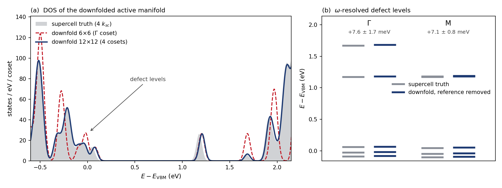
Panel (a) is the density of states of the downfolded active manifold with the same constant removed. The $6\times6$ curve carries the spikes of a 36-point sample; the four-coset average collapses onto the supercell truth across the valence edge, the gap and the conduction edge alike. The defect levels sit in the gap where the host has no weight, which is why they can be read off at all.
Cost. Two changes made the finer sampling routine rather than heroic. Batching the fold over columns (col_chunk) bounds the working set instead of scaling it with $N_A/n_{\rm pool}$ — and, by fitting the batch in cache, it also cut $V\!\cdot\!\psi$ from $9.8$ to $5.0$ s; the chain matrices are bit-identical ($\max|\Delta A|=\max|\Delta B|=0$). Band-limiting the cube to $162\times162\times216$ took the fold to $5.6$ s per step. Together the MODE C chain runs in $5.1$ min against $74.3$ min for the first working version, a $14\times$ speedup with quasiparticle levels moved by $\le 0.1$ meV; the whole $12\times12$ result is four such runs.
Chain length. With the chain free to be long, it is worth knowing how long it must be. Truncating the same $\Gamma$ chain: $N_S=8$ is nonsense, $10$ is $21$ meV off, $12$ is $7$ meV off, $16$ is within $0.8$ meV and $24$ is converged. The production runs use $24$.
9. The other $12\times12$: how big is the supercell's own error?
Run the $144$-$k$ grid directly rather than by cosets and it is a different calculation — one defect per 144 cells instead of 36, with $q$ resolved throughout the BZ (methods §7b–7c). Nothing can be gated against a supercell there; a $12\times12$ cell is 431 atoms. But the comparison against the $6\times6$ answers a question the supercell truth cannot ask of itself: how much of a defect level is periodic-image interaction?
The comparison is unusually clean. Both grids contain $K$ and $\Gamma$, so the pristine active manifold comes out identical — VBM $+0.0058$, CBM $+1.6679$, gap $1.6621$ eV — and no alignment is needed. And both use the same $\Delta V$, so the vacuum-reference constant of section 2 cancels exactly. What is left is the concentration.
| in-gap bound state | $6\times6$ (1/36) | $12\times12$ (1/144) | shift |
|---|---|---|---|
| $a_1$-like | $+0.0846$ | $+0.0735$ | $-11.1$ meV |
| degenerate pair | $+1.1986$ ($\times2$) | $+1.2023$ ($\times2$) | $+3.7$ meV |
(Both columns at $N_S=16$, which is what the $144$-$k$ chain's memory allows, so the truncation is common to both; at $N_S=24$ the $6\times6$ reads $+0.0841$ and $+1.1985$ and the shifts are unchanged to $0.5$ meV.)
So diluting the defect four-fold moves the true in-gap levels by $4$–$11$ meV — the same size as the $+7.6\pm1.7$ meV residual this note has been tracking. The downfold is now accurate to about the finite-size error of the reference it is being tested against. Tightening it further would buy a closer fit to a supercell that is itself off by a comparable amount; the honest next lever is a more dilute reference, not a better downfold.
Two things in the table are deliberately absent. The features near the band edges ($-0.0081$, $-0.0080$, $-0.0045$ below the VBM; $+1.6756$ just under the CBM) are continuum resonances, and a resonance read off a discrete spectrum moves with the sampling density — at four times the $k$-points they are not comparable quantities. Only genuinely isolated in-gap states are listed.
Cost. $16$ block steps, $140.4$ min, $261$ s per step in the fold, operator unit test $2.3\times10^{-11}$. The scaling is cubic in $N_k$ at fixed rank count: the fold is $N_r\,n_b N_k^3/n_{\rm pool}$ (an $N_k^2$ channel double loop times $N_k$ columns per rank) and full reorthogonalization carries the same $N_k^3$ with an extra $N_S^2$. Measured, $36\to144$ $k$ takes the fold from $4.1$ to $261$ s of multiply — $64\times$, exactly $4^3$. Memory goes as $N_k^2$, which is why $N_S=16$ rather than $24$. Reorthogonalization overtakes the fold at step 9 and is the wall beyond this size.
10. The spectral function, end to end
Everything above lives on a coarse $k$-grid. Sections 7b–9d of the methods note assemble the route off it: the $\omega$-resolved downfolded vertex, the pair-Wannier transform (leave-one-out $0.61$–$0.88$ meV), and a real-space Koster–Slater cluster whose dimension does not depend on the fine grid. Running it end to end:
with $\mathcal G^A$ built by Wannier interpolation of the host onto a $96\times96$ grid. No fit in $\omega$: the continued fraction is evaluated at every point, so the poles of the rest self-energy are carried exactly and no validity window is imposed.
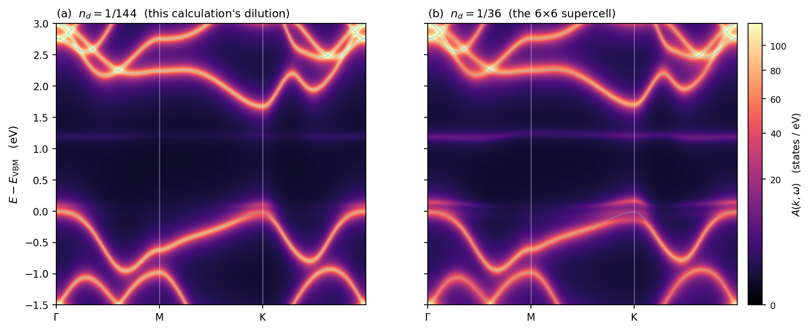
$450$ frequencies over $[-1.5,+3.0]$ eV ($\Delta\omega=10$ meV), $181$ $k$-points, $R_{\rm cut}=4a$ (61 cells, cluster dimension 671), $\eta=50$ meV.
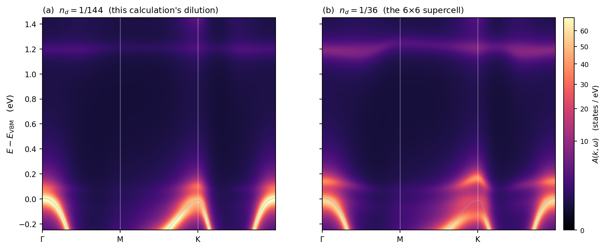
The same run, zoomed on the gap. At $n_d=1/36$ the near-edge weight is large enough to renormalize the valence band visibly at K — the bare band (thin line) runs below the bright weight.
The acceptance test. In the gap $\mathcal G^A$ is real, so the bound states are the roots of $\det[1-\tilde{\mathcal V}\mathcal G^A(\omega)]=0$ — a determinant with no $\mathbf k$ in it, which is why the in-gap lines are flat. Those roots must reproduce the quasiparticle levels obtained by directly diagonalizing $H_{\rm eff}(\omega)$ on the coarse grid:
| cluster Koster–Slater | direct diagonalization | difference | |
|---|---|---|---|
| deep in-gap level | $+1.2019$ | $+1.2023$ | $\mathbf{-0.38}$ meV |
| $a_1$, near the edge | $+0.0808$ | $+0.0735$ | $+7.3$ meV |
The deep level lands at half a meV. That welds the whole new chain — Wannier gauge, pair kernel, cluster truncation, fine-grid $\mathcal G^A$, Dyson solve — onto the coarse-grid result that sections 1–9 validated; a systematic error anywhere in it could not survive this. The $a_1$ level is a different object and its $7.3$ meV is not error. Doubling the $\omega$ resolution moved it only from $8.8$ to $7.3$ meV, so it is not a grid artefact. It sits $68$ meV above the VBM, where at $\eta=50$ meV $\mathcal G^A$ already has an imaginary part: that state is a resonance hybridized with the valence continuum, not a bound state, and the peak of $|T|$ is not the same quantity as a quasiparticle fixed point computed on a coarse grid whose spectrum is discrete and has no continuum to hybridize with. Lowering $\eta$ is the test that would show it.
What the figure shows. The host bands stay sharp; the defect adds two flat in-gap lines. Their energy is $\mathbf k$-independent by construction, but their weight varies by $85$–$93\%$ along the path — that is the overlap of the localized state with each Bloch state, and it is physics, not noise. Going from $n_d=1/144$ to $1/36$ moves the deep line from $+1.2023$ to $+1.1999$ eV, the defect–defect interaction at higher concentration.
Where the poles of $\Sigma^R$ are. Counting Ritz values by inertia: of the $25\,344$ poles, $25$ lie inside the active manifold and four inside the gap — but a dense scan shows $\lVert\Sigma^R\rVert$ rising smoothly and monotonically from $0.398$ to $0.863$ across the whole gap, so those four carry negligible residue. (That is also why the Chebyshev fit of section 9c reached $0.026$ meV.) One pole near $+2.65$ eV does not: $\lVert\Sigma^R\rVert$ reaches $41.9$ and the diagonal changes sign. It is a dressed rest state about $1$ eV above the CBM — very likely the collective mode that made the MODE B Neumann ladder diverge, and MODE C carries it exactly rather than working around it.
Cost. The $\omega$ points are independent, so the driver runs 8 workers $\times$ 16 threads over an interleaved $\omega$ split. Measured: $450$ frequencies in $\mathbf{6}$ min $\mathbf{25}$ s, i.e. $0.85$ s per $\omega$ against $11.8$ s for the serial version — a $\mathbf{13.9\times}$ speedup (8 from the workers, the rest from an exclusive node). The continued fraction is still $90\%$ of it, so the pole–residue representation of section 9c is the next lever if a much denser grid is ever wanted.
11. Three defects through the same pipeline
O$_S$ and Se$_S$ were carried through the identical route — same $12\times12$ isolated-defect chain ($16$ blocks, $141.5$ and $140.4$ min, operator unit test $1.8\times10^{-11}$ and $7.2\times10^{-12}$), same pair-Wannier transform, same cluster, same $450$ frequencies. Only the host differs in one respect: their cells carry a third and fourth atomic species, so the pristine calculation supplying the active manifold must declare all four (see the note in section 10 of the methods page).
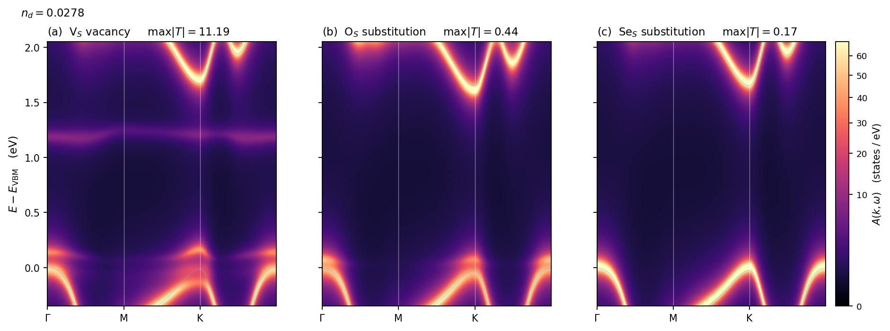
In the gap $\mathcal G^A$ is real, so a bound state requires $1-\tilde{\mathcal V}\mathcal G^A$ to become singular. It does so only for the vacancy:
| defect | $\max\lVert\tilde V\rVert$ | $\max|T|$ | in-gap bound states |
|---|---|---|---|
| V$_S$ | $0.878$ | $\mathbf{11.19}$ | $+0.0808$, $+1.2019$ eV |
| O$_S$ | $0.706$ | $0.44$ | none |
| Se$_S$ | $0.203$ | $0.17$ | none |
Neither isovalent substitution binds anything: their $T$-matrices never approach the singularity, and the panels show a clean gap with host bands that are merely broadened — strongly for O$_S$, barely at all for Se$_S$. This is the same ordering the coarse-grid level gates gave, now obtained in the isolated-defect limit with the rest space resummed to all orders and the frequency dependence carried exactly, and with no supercell reference involved at any point.
It is worth being precise about what changed and what did not. The earlier gates established that O$_S$'s in-gap "ghost" at $+0.80$ eV is an artefact of insufficient dressing — a correctly converged rest self-energy removes it. The present calculation does not merely fail to find that state at a finer mesh; it shows that at the isolated-defect concentration the O$_S$ potential is too weak to bind at all, with $\max|T|$ a factor of $25$ below the vacancy's.
11a. At an experimentally relevant density
Because the cluster solve makes $n_d$ a free parameter, the same cached $T(\kk,\omega)$ serves any density. Converting with the primitive-cell area $\tfrac{\sqrt3}{2}a^2 = 8.786$~\AA$^2$,
a factor of $32$ more dilute than the $6\times6$ supercell.
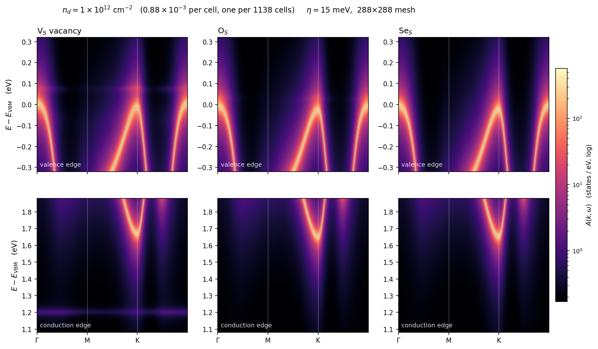
One caveat governs this figure and is worth stating plainly. At this density the physical linewidth is $\mathrm{Im}\,\Sigma^{\rm ed} = n_d\,\mathrm{Im}\,T \approx 4$ meV, well below the $\eta = 50$ meV used for the maps of section 10: at that broadening the three defects look identical and the defect lines are invisible, because what is being plotted is the artificial width, not the physics. The figure above therefore uses $\eta = 15$ meV. Reducing $\eta$ has a cost of its own — the Brillouin-zone sum for $\mathcal G^A$ must not have a level spacing coarser than $\eta$, so the fine mesh was raised from $96\times96$ to $288\times288$; the run still takes $7$ min per defect.
With that resolution the vacancy's two bound states survive dilution: the $+1.20$ eV line remains sharp and flat below the conduction edge, and the shallow $+0.08$ eV line is faintly visible above the valence edge, both with weight $\propto n_d$. The isovalent substitutions leave both edges clean, as they must, having no pole to carry weight.
11b. The conduction edge about K
The earlier explicit-$T$ work on Banff reported this window: $k$ from $K-0.3\,\overline{\Gamma K}$ through $K$ to $K+0.45\,\overline{KM}$, and $E-E_{\rm VBM}\in[1.45,2.15]$ eV at $\eta=5$ meV. Reproducing it here puts two independent routes on the same axes — that one built the $T$-matrix by explicit inversion of a truncated rest space, this one by $\omega$-resolved downfolding, Wannier interpolation and a real-space cluster.
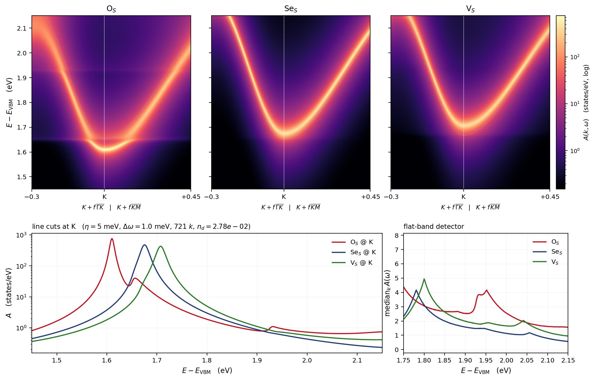
$\eta=5$ meV is what makes this expensive: the $\mathcal G^A$ Brillouin-zone sum must have a level spacing finer than $\eta$, so the fine mesh goes to $1200\times1200$ ($1.44$M points) and $\mathcal G^A$ overtakes the continued fraction as the dominant cost ($12$ s per frequency against $8.7$). $701$ frequencies at $\Delta\omega=1$ meV — the features are $5$--$10$ meV wide, so the reference's $0.25$ meV is oversampled — take $25$--$27$ min per defect.
At $n_d=1/36$ the conduction edge at K moves by tens of meV, and the three defects move it differently:
| defect | bare CBM | peak at K | shift | flat weight above $1.75$ eV |
|---|---|---|---|---|
| O$_S$ | $+1.6520$ | $+1.6100$ | $\mathbf{-42.0}$ meV | strong, $\approx1.93$--$1.96$ |
| Se$_S$ | $+1.6520$ | $+1.6750$ | $+23.0$ meV | weak, $1.78$ |
| V$_S$ | $+1.6679$ | $+1.7070$ | $+39.1$ meV | $1.80$ |
The flat-band detector (median over $k$, which suppresses the dispersive host band and keeps $k$-independent weight) is the sharpest discriminator: O$_S$ carries a clear resonance near $1.95$ eV that neither other defect has.
Comparison with the Banff figure. The ordering agrees — O$_S$ pulls the edge down and adds the most structure above it, Se$_S$ is the cleanest, V$_S$ is intermediate — but the magnitudes do not. The shifts here are larger, and the flat features sit $\sim100$ meV lower. Three differences are candidates and only the first is likely decisive: (i) that calculation truncates the rest space at band 70 while this one resums the whole of it including the plane-wave tail, and under-dressing is exactly what sections 4--6 showed moves levels by tens of meV; (ii) its vertex is frozen at $\omega_0=$ CBM, this one is $\omega$-resolved; (iii) the two hosts here are themselves different self-consistent runs — the $2$-species host used for V$_S$ and the $4$-species one required by O$_S$/Se$_S$ differ by $16$ meV in the interpolated CBM at K, which is why the table quotes each shift against its own bare band rather than a common zero.
11c. The valence edge about K
The same window at the valence edge, in the ranges of the corresponding Banff figure: $E-E_{\rm VBM}\in[-0.45,+0.35]$ eV on the same $K$-centred path, $\eta=5$ meV.
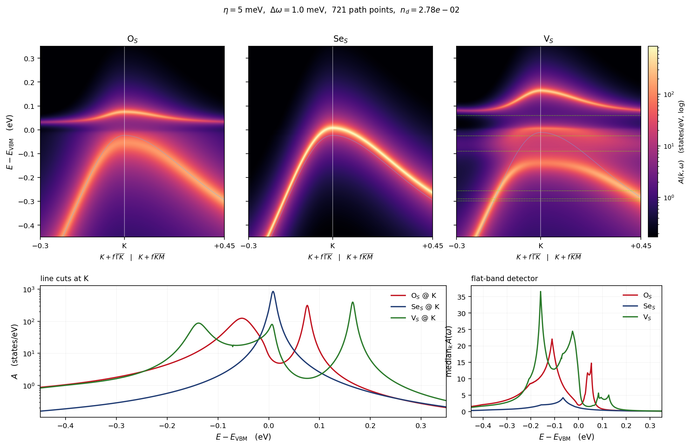
The three separate cleanly. V$_S$ and O$_S$ both put substantial flat weight just above the valence edge at $n_d=1/36$ and leave a visibly renormalized band below; Se$_S$ does neither — its valence band tracks the bare one and its peak sits at the edge itself.
| peak of $A$ at K | flat-band detector, max | |
|---|---|---|
| V$_S$ | $+0.1650$ eV | $\mathbf{36.6}$ |
| O$_S$ | $+0.0760$ eV | $22.1$ |
| Se$_S$ | $\mathbf{+0.0080}$ eV | $\mathbf{4.2}$ |
The detector — the median over $k$, which suppresses the dispersive host band and keeps $k$-independent weight — is the sharpest statement: Se$_S$ is nearly featureless at a ninth of the vacancy's amplitude, and the small oscillations its curve does show are ripple at the $\omega$-grid spacing, not structure. That is the same ordering the $T$-matrix norms gave ($11.19$ / $0.44$ / $0.17$), now read off the spectral function at the edge that matters for $p$-type transport. The green dotted lines on the V$_S$ panel are the $6\times6$ supercell reference levels of section 4, which describe the same concentration:
| flat feature | nearest reference level | difference |
|---|---|---|
| $-0.1590$ | $-0.0899$ | $-69.1$ meV |
| $-0.0720$ | $-0.0899$ | $+17.9$ meV |
| $\mathbf{-0.0250}$ | $\mathbf{-0.0248}$ | $\mathbf{-0.2}$ meV |
| $+0.0840$ | $+0.0596$ | $+24.4$ meV |
| $+0.1270$ | $+0.0596$ | $+67.4$ meV |
The central feature lands on its reference to $0.2$ meV and the two flanking it to $\sim20$ meV, but the outermost two do not pair off cleanly. A level-by-level match is not what should be expected here, and it is worth saying why rather than treating the mismatch as an error. The reference levels are eigenvalues of a periodic supercell — the defect interacting with its own images coherently. The peaks plotted are poles of $[\,\omega - H_0 - n_d T\,]^{-1}$, the single-site (average-$T$-matrix) result, in which defects scatter independently with no interference. At $n_d = 1/36$ the mean defect separation is six cells and that approximation is being pushed; the discrepancy is a statement about the ensemble treatment, not about the vertex. At $10^{12}$ cm$^{-2}$ (section 11a) the two descriptions would agree.
12. Residual ledger
Nothing structural remains. With the two systematics of section 2 controlled, the $\omega$-resolved downfold agrees with the supercell truth to $\le 8$ meV absolute and $\le 4$ meV in shape on all three defects plus the displacement probe. What is left is (i) the per-defect reference constant, a convention that can be removed by subtracting the $\Delta V$ far-field plateau, and (ii) a few-meV floor consistent with the $\eta$ used in the quasiparticle search — a floor that section 8 shows is not a sampling artefact, since going from one supercell $k$-point to four leaves it at $0.8$ meV.
Section 9 puts a ceiling on what is worth chasing: the $6\times6$ reference itself carries $4$–$11$ meV of periodic-image error, so the remaining downfold residual is no longer the largest error in the comparison. Next levers are therefore about the reference and about reach, not about accuracy at $6\times6$: SOC; a more dilute gate; and the Wannier-interpolated fine-grid $T$-matrix on the same $\tilde V(\omega)$, which is also the way past the $N_k^3$ wall.